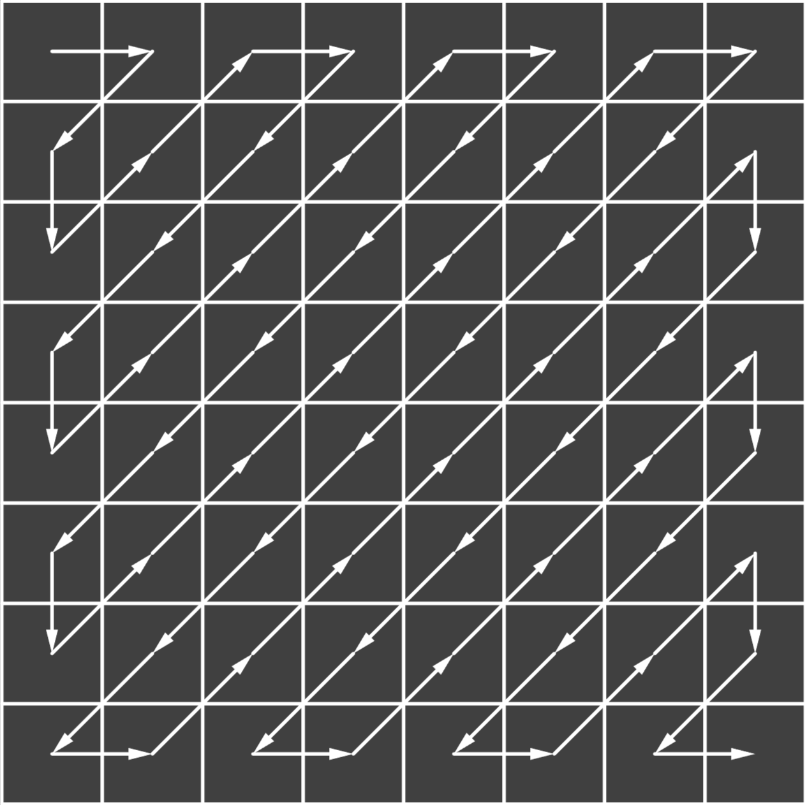

Steganography - Hiding data inside an image
Introduction
What I want to achieve. My inspiration was this video where somebody tried to hide a savefile into a screenshot of an image. This would be a very cool feature - sending a screenshot of the game to your friends and then they could directly play where you left off.
This would normally be pretty easy to do as you could just add data to the meta data of an image. The issue that arrises is social media. Most social media platforms remove meta data from an image when sending.
The only real oportunity we have is encoding our data directly in the image data. The name of this process is steganography. After a bit of research I discovered that this is actually an insanly complex topic with thousands of research papers on it. It is widely used in cryptography and image watermarking.
I started my journey with PNGs but decided against it. The reason is because social media platoforms not only compress the meta data from an image but also the image itself. So pngs often times get compressed into jpegs. The only exception is discord.
So if we use an image format that already is compressed it already more likely to get the correct data.
Before I dive into the steganography algorithm I will quickly explain how jpeg works.
The JPEG algorithm
The jpeg algorithm is a lossy image compression algorithm that makes use of the huamn eye's limitations in perceiving fine details. It typically compresses images by 90% with only minor visible artifacts.
JPEGs can be compressed with different quality levels, where 1 gives the worst quality and 100 the best, but with the highest size.
Step 1
First the colors are converted from R-G-B to the Y-CB-CR color space (Y: Brightness, Cb = Color blueness, Cr = Color redness). Since the eye is less sensitive to the color channles, they also can be compressed further with chroma subsampling.
Step 2
The image is divided into 8x8 blocks.

Step 3
Each block is converted with the Discrete cosine transform (DCT). It produces a value for every DCT frequency (like seen below) that when all combined give an proxiimation of the original image. This works because most images have similar neighbouring pixels. With random noise this approach procuces clear artifacts.

Step 4
The dct coefficients are quantized. This means the dct coefficients are divide by its corresponding constant in the quantization table. This table is calculated by the quality factor which produces higher number when it is lower. Additionally a higher quantization is applied in the lower frequencies. This gives a lot of 0s which is usefull for later and the core reason how the quality factor impacts the jpeg image.
Step 5
The new dct coefficient are then reordered in a zig-zag pattern This causes the high frequency coefficients to be at the begin of the array and the lowe frequency coefficients at the end.
Step 6
At the end the bytes are encoded with the huffman algorithm, which compresses the bits further by assigning codes to more frequent bit combinations. This is especially usefull in combination with the previous step, because the lower frequency coefficients tend to have a lot of 0s.